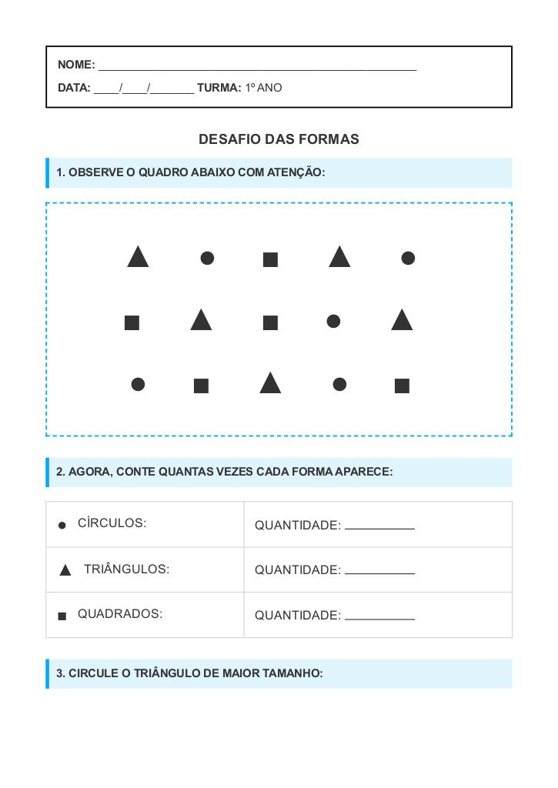

← Voltar ao Portal
NOME:
___________________________________________________
DATA:
____/____/_______
TURMA:
1º ANO
Atividade de Formas – 1º Ano do Ensino Fundamental
1. OBSERVE O QUADRO ABAIXO COM ATENÇÃO:
▲ ● ■ ▲ ●
■ ▲ ■ ● ▲
● ■ ▲ ● ■
2. AGORA, CONTE QUANTAS VEZES CADA FORMA APARECE:
●
CÍRCULOS:
QUANTIDADE:
▲
TRIÂNGULOS:
QUANTIDADE:
■
QUADRADOS:
QUANTIDADE:
3. CIRCULE O TRIÂNGULO DE MAIOR TAMANHO:
▲
▲
▲
Visualização da Folha de Atividade
